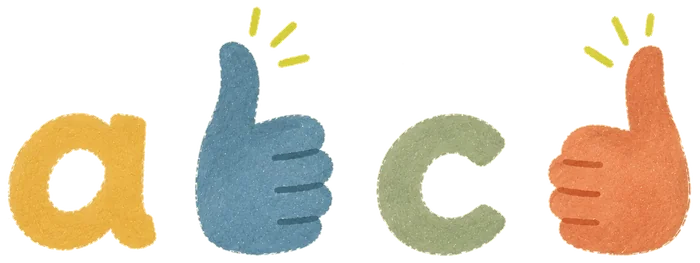

Startseite › Ratgeber › b und d verwechseln
Kind verwechselt b und d – was hilft?
Von Henning Mielke · Stand: November 2026
Fast jedes Kind verwechselt am Anfang b und d. Das ist in den ersten Schuljahren ganz normal und hat nichts mit den Augen zu tun. Die beiden Buchstaben sind Spiegelbilder – und die kann unser Gehirn von Natur aus schlecht auseinanderhalten. Mit einer Eselsbrücke und kurzem, regelmäßigem Üben mit echten Wörtern legt sich die Verwechslung bei den meisten Kindern, sobald Lesen und Schreiben sicherer werden.
Warum gerade b und d?
Für unser Gehirn ist ein Gegenstand derselbe, egal ob er nach links oder nach rechts zeigt. Eine Tasse mit dem Henkel links bleibt eine Tasse. Im Alltag ist das sehr nützlich – beim Lesen stört es. Denn bei b und d (und genauso bei p und q) macht genau die Richtung den Unterschied.
Beim Lesenlernen muss das Gehirn deshalb etwas verlernen: Spiegelbilder für gleich zu halten. Die Forschung zeigt, dass vor allem das Lesenlernen selbst diese Unterscheidung bringt, nicht das bloße Älterwerden.1 Mit anderen Worten: Üben hilft, Abwarten allein weniger.
Bis wann ist das normal?
In der 1. und 2. Klasse verwechseln sehr viele Kinder b und d, beim Lesen wie beim Schreiben. Meist legt sich das, sobald Lesen und Schreiben sicherer werden – oft im Lauf der 2. Klasse. Eine Verwechslung allein ist kein Zeichen für eine Lese-Rechtschreib-Schwäche.2, 3
Sprecht mit der Lehrkraft, wenn euer Kind b und d auch Ende der 2. Klasse noch oft vertauscht und weitere Schwierigkeiten dazukommen:
- sehr langsames, mühsames Lesen, auch bei bekannten Wörtern,
- häufiges Raten von Wörtern,
- viele Fehler beim Schreiben, auch bei einfachen Wörtern.
Worauf ihr sonst achten könnt, steht im Ratgeber Anzeichen für LRS.
Eselsbrücken, die wirklich helfen
Beide Daumen hoch
- Beide Fäuste nebeneinander halten.
- Beide Daumen nach oben strecken.
- Die linke Hand bildet ein b, die rechte ein d.
- Erst kommt das b, dann das d – wie im Alphabet.
Der Vorteil: Die Hände hat euer Kind immer dabei, auch im Diktat.

Die Schreibbewegung
Beim Schreiben unterscheiden sich die beiden deutlich: Das b beginnt oben mit dem langen Strich, der Bauch kommt danach. Das d beginnt mit dem runden Bogen – wie ein c oder a –, und der lange Strich kommt zum Schluss. Wer die Bewegung ein paar Mal groß in die Luft oder mit dem Finger auf den Tisch schreibt, hat sie bald „in der Hand“.
Ein Buchstabe nach dem anderen
Viele Kinder kommen besser zurecht, wenn sie erst einen Buchstaben ganz sicher können, zum Beispiel das b, und das d erst danach dazukommt. Wer beide gleichzeitig übt, verwechselt sie oft länger.
So übt ihr zu Hause
- Kurz und oft: Fünf Minuten am Tag bringen mehr als eine lange Übungsstunde am Wochenende.
- Mit echten Wörtern: bald – dort – blau – drei – beide – dabei. Das b oder d steht dabei mal vorn, mal in der Mitte, mal hinten.
- Auch im Satz: Sobald einzelne Wörter klappen, kurze Wortgruppen lesen, zum Beispiel „das blaue Bild“ oder „dann bist du dran“. Im Satz hilft der Sinn mit.
- Ruhig korrigieren: Lieber kurz fragen „Daumen?“ als „Falsch!“. Euer Kind soll die Eselsbrücke selbst benutzen.
- Verwechslungen merken: Wörter, bei denen es immer wieder hakt, aufschreiben und an den nächsten Tagen wiederholen, bis sie an mehreren Tagen hintereinander klappen.
Was nicht nötig ist
Ein Sehtest schadet nie, wenn ihr unsicher seid. Die b-d-Verwechslung selbst ist aber kein Sehproblem: Das Auge sieht den Buchstaben richtig, nur die Richtung wird noch falsch eingeordnet. Spezielle Brillen oder Schriften sind dafür nicht nötig – Üben mit Buchstaben und Wörtern ist der Weg.
Wenn euer Kind Buchstaben auch spiegelverkehrt schreibt, lest weiter im Ratgeber Spiegelschrift bei Kindern.
So hilft Leseflitz beim Üben
In Leseflitz gibt es eigene Übungen für b und d: „b und d“ mit Wörtern wie bald, dort, beide und dabei, „b und d kurz“ mit kurzen Wörtern für den Anfang und „b und d im Satz“ mit Wortgruppen wie „du bist dabei“ oder „bei dir drüben“. Die Eselsbrücke „Beide Daumen hoch!“ ist in der App mit demselben Bild erklärt.
Ein Wort erscheint, euer Kind liest es laut, ihr tippt weiter. Wörter, bei denen es hakt, kommen in die Wortklinik. Dort werden sie wiederholt, bis sie an vier Übungstagen hintereinander gut gelesen sind. Die Zeitanzeige lässt sich abschalten, falls sie Druck macht.
Sieben Tage lang ist alles freigeschaltet, auch die b-und-d-Übungen. Danach übt ein Kind dauerhaft gratis mit der Liste „100 häufigste Wörter“ und der Wortklinik; die b-und-d-Übungen gehören zum Jahresabo für 6,99 € im Jahr für die ganze Familie. Keine Werbung, kein Tracking.
Häufige Fragen
Ist es schlimm, wenn mein Kind b und d verwechselt?
Nein. In der 1. und 2. Klasse ist das sehr verbreitet. Es legt sich meist, sobald Lesen und Schreiben sicherer werden.
Ist eine b-d-Verwechslung ein Zeichen für Legasthenie?
Allein nicht. Wenn sie lange anhält und weitere Schwierigkeiten dazukommen, etwa sehr mühsames Lesen oder viele Rechtschreibfehler, sprecht mit der Lehrkraft.
Welche Eselsbrücke hilft bei b und d?
Am bekanntesten ist „Beide Daumen hoch“: Beide Fäuste nebeneinander, Daumen nach oben – die linke Hand bildet ein b, die rechte ein d, in derselben Reihenfolge wie im Alphabet.
Warum verwechselt mein Kind auch p und q?
Aus demselben Grund: Auch p und q sind Spiegelbilder. Die gleichen Tipps helfen – erst einen Buchstaben sicher üben, dann den zweiten.
Hilft eine spezielle Schrift?
Manche Schriften machen b und d stärker unterschiedlich. Ob das beim Lesenlernen nachhaltig hilft, ist nicht gut belegt. Entscheidend ist das Üben mit echten Wörtern.
Weiterlesen
- Kind liest stockend – was hilft?
- Spiegelschrift bei Kindern – ist das normal?
- Häufige Wörter für Erstleser – mit Liste zum Ausdrucken
- Alle Ratgeber
Über den Autor: Henning Mielke ist Vater von drei Kindern und hat Leseflitz für sie entwickelt. Seine Kinder üben damit jeden Tag fünf Minuten. Mehr über Leseflitz
Quellen
- Kolinsky, R. & Fernandes, T. (2014): A cultural side effect: learning to read interferes with identity processing of familiar objects. Frontiers in Psychology 5. frontiersin.org
- Understood.org: FAQs about reversing letters and dyslexia (Verdrehungen bis etwa zur 2. Klasse verbreitet; allein kein Zeichen für Legasthenie). understood.org
- Schulte-Körne, G. (2023): Aktuelle Übersicht zur Diagnostik und Behandlung der Lese- und/oder Rechtschreibstörung, LMU Klinikum München. dgkjp.de (PDF)